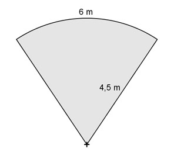

Flächenberechnungen Aufgabe 42 Ein Restgartengrundstück hat die Form eines Kreisausschnitts, mit einer Bogenlänge von 6 m und einem Radius von 4,5 m. Wie groß ist seine Fläche?  2 * π * r * α° b = ---------------- | *360° 360° b * 360° = 2 * π * r * α° | : 2 * π * r b * 360° 6 m * 360° α° = ------------- = ----------------- = 2 * π * r 2 * π * 4,5 m α° = 76,4° π * r² * α° π * 4,5² m² * 76,4° A = -------------- = ---------------------- = 13,5 m² 360° 360